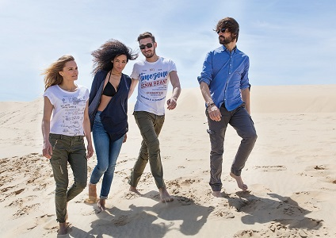

"Je kleden, zoals je bent en hoe je leeft: Leef je passie en wees je zelf."
"Je kleden, zoals je bent en hoe je leeft: Leef je passie en wees je zelf."
Het merk Timezone is ontstaan in het jaar 1993 en staat voor "je kleden" en niet " je laten aankleden". Dit was - en is nog steeds - de leidende gedachte van Wolfgang Endler toen hij het merk TIMEZONE creëerde.
Wolfgang Endler begon zijn carrière als timmerman, werkte als surf instructeur voor een aantal jaren en deed zijn eerste handelservaring op als importeur van verschillende sportkleding labels. In augustus 1991 richtte hij het huidige distributiebedrijf "Escape Clothing GmbH". In november 1993 registreerde hij de merknaam "TIMEZONE".
Oorspronkelijke begonnen de ontwerpers met vooruitstrevende Denim broeken. Daarmee legde ze de basis voor een product dat een natuurlijke levensstijl combineert met vooruitstrevende designs en hoge authenticiteit. Uitgesproken wassingen, plat geweven stoffen en goede jeans kwaliteiten dat is waar TIMEZONE voor staat.
In de loop der jaren groeide het uit tot een bedrijf dat staat voor een open en eerlijke samenwerking en waar flexibiliteit en klant gerichtheid het belangrijkste zijn. Deze waarden worden gecombineerd met een zeer stabiele groei en een gezonde financiële achtergrond.
Alle collecties van TIMEZONE worden ontwikkeld met veel aandacht voor detail en uitgevoerd met vele jaren ervaring. Veel kleine stappen zijn er nodig om het perfecte product te creëren. Wij doen ons best om al deze afzonderlijke stappen af te stemmen op de best mogelijke producten en aan te bieden aan onze klanten.
Het product is onze passie. Deze producten spreken onze taal en dragen bij in onze persoonlijke dagelijkse behoeften. Wie TIMEZONE draagt, of het nu een broek, hemd of een paar schoenen is: Wil zijn of haar identiteit behouden, zich comfortabel voelen in zijn outfit en zichzelf kunnen zijn.
"Het draait allemaal om "ECHTE MENSEN IN ELKE TIMEZONE".
Authentieke producten - van "echte mensen" voor "echte mensen". Voel het, Het is jouw beslissing, vertel het aan al je vrienden, dump je verleden en laat het los. Kruis je visie, geniet van de rit door de tunnel van de tijd, zal het je gedachten veranderen wanneer je de TIMEZONE invoert.